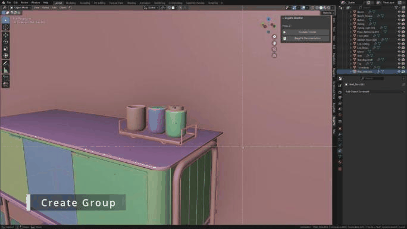

Group
BagaPie groups put objects inside a common bounding box. They make large scenes easier to manage, work in animation, and can be turned into instances to lighten a scene.
Video: BagaPie 11 - Group.
Create a group
Select the objects, press J and choose Create Group, or press Ctrl + G.

BagaPie creates a bounding box. Its content is no longer selectable: select the box to move the whole group. Groups can contain other groups.
Group shortcut
If the panel shows Add Group Shortcut, click it: Ctrl + G then creates groups, and gives quick access to the group tools when a group is selected. Save your preferences, or the shortcut is reset at the next start.
Group tools
Select the bounding box to display the group tools in the BagaPie panel.
| Button | Action |
|---|---|
| Make Content Selectable / Make Content Unselectable | Unlock or lock the selection of the group content. All also applies to groups inside the group |
| Group to Instance | Replace the group with an instance (see below) |
| Isolate / Unisolate | Edit the group alone, then come back |
| Ungroup | Remove the group, keep the objects |
| Delete Group (ALL) | Delete the group and its content |
| Add / Remove (Group Content) | Add the selected objects to the group, or remove them |
| Link Obj to Group Coll Only | Unlink the group objects from every other collection |
| Move Instance Group | Move the group source without moving its instances |
| Double Clic Edit | Turn double click editing on (beta) |
Link Obj to Group Coll Only removes the objects from all collections except the group collection. If these objects are needed in other collections, do not use it.
Add and remove content
- Add: select the objects to add, then the group (last), and click Add.
- Remove: make the content selectable, select the objects, and click Remove.
Double click edit (beta)
With Double Clic Edit on, double click a group bounding box or a group instance to isolate it for editing. Double click in empty space, or click Exit Editing, to come back. Press Esc to turn double click editing off.
Groups and instances
Group to Instance replaces the group with an empty that instances the group collection. The original group is moved to the world origin.
- Changes made to the group are repeated on every instance.
- Think of the empty as the world origin of the group: objects are placed relative to it.
- To move the source group without affecting its instances, use Move Instance Group. Use it only when instances of the group exist.
- Select an instance and click Edit Instance Group, or double click it, to edit the group.
- Duplicate instances freely to repeat elements in a scene.
To Instance, in the Manage section of the J pie, creates the group and the instance in one step.
Duplicate
| Shortcut | Action |
|---|---|
| Alt + J | Duplicate the group and its content |
| Alt + N | Linked duplicate: meshes stay linked, like Alt + D compared to Shift + D |